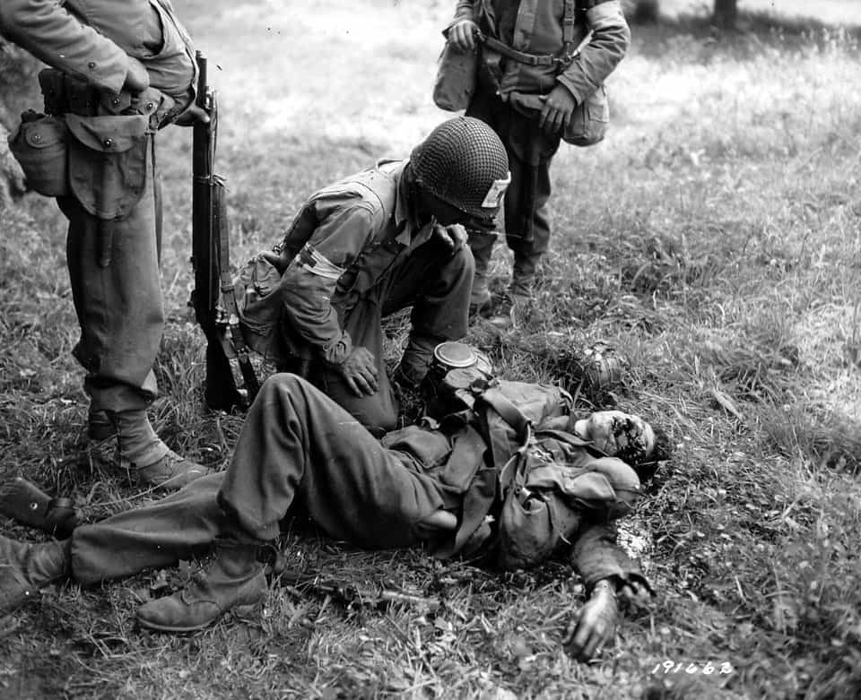

< < < Back
Men Fought The Nazis, Women Slept With Them – Return Of Kings
I grew up listening to my family’s tales about their service in World War 2. A grand total of four of my forebears served in the Canadian Army during WW2—one in the air force, as part of a bomber crew, one as a tanker (he died just after the new year in 1945, when his tank was destroyed), and two others as regular old infantry men.
My infantry-serving great uncle was the best story teller, and…no offense to the others…his stories were the most interesting since he served in combat the longest (arriving in Normandy a week after the landings, whereas my other uncle arrived in Italy during 1945 and saw minor action, while the third was killed and the fourth in the air force had a pretty boring routine occasionally interrupted by flak and Messerschmidt’s). He saw the most of the war, grinding his way across France and Holland and Germany while personally experiencing some of the epic events that are now ingrained forever in history. He survived run-ins with Tiger tanks, fought against elite Waffen SS divisions and saw a concentration camp (Bergen-Belsen) firsthand.
The most harrowing event of his service happened during the drawn out battle for the Carpiquet Airfield, located close to the Normandy coastline. At the time the Germans believed that the British and Canadian armies were the biggest threats, and concentrated the majority of their elite panzer and SS divisions against them, making the battle bloody and protracted.
One day my great uncle’s platoon was tasked with a reconnoitre patrol, a fancy term for what was essentially sending a few dozen men toward the German front line to see what sort of and how much weaponry would be fired at them. My great uncle’s platoon had barely gotten a hundred and some yards away from their line when two well-sighted MG42 machine guns caught the platoon in a crossfire in a very exposed position. Unfortunately my great uncle was near the front of the column. He was one of the few up there not to be killed or wounded immediately. He hit the deck, crawling into what little shelter there was around alongside the few members of his platoon who hadn’t been wounded too heavily to move. The machine guns kept their fire up for several minutes until finally, all at once, they stopped. No shots rang out from my great uncle or the men who were huddling around him. They were armed with bolt action Lee Enfield rifles, with ten round clips. Considering the MG42 machine gun is capable of firing 1200 rounds a minute and there were usually in excess of 1,000 rounds for it on hand in a typical German position, it wasn’t exactly an unreasonable idea for him to keep huddled down and quiet.
It didn’t take long for the few suppressed squaddies to realize that the rest of the platoon had either been incapacitated or pulled back. The way back to the Canadian lines (so damn close but so damn far) was across a relatively flat field with only waist high grass and the occasional bush for cover. Anyone crawling through it would be seen immediately, and the Germans were well aware that there were some Canadian troops out there cowering.
At various times in the day, those in Canadian lines tried to lay down covering fire (they, like the Germans, knew there were pinned down survivors in No Man’s Land). During a heavy barrage of artillery and machine gun fire on the German’s positions, my great uncle and the men with him started to pull out. An MG42 opened up immediately and scythed down the two men who had gotten up just moments before my great uncle. One went down instantly, dead, and the other had his head blown in half by the same burst. The man with the exploded head actually managed to stumble a few more steps and went down only when hit with a secondary burst of machine gun fire. The now fewer remaining survivors hunkered down and waited for darkness. When it came the survivors pulled out…just minutes before a German patrol swept over their former position in a fierce local counter attack.
Hundreds of thousands of men from many western countries faced similar horrors day after day after day during World War 2. Unlike the popular myth of eager Johnny signing up in droves, many of them were drafted (conscripted) into service. We in Canada actually had a crisis because we were running out of bodies willing to voluntarily sign up to go over there. Regardless, the war against Nazi German was arguably one of the few truly just wars throughout history. Nazi Germany was a genocidal, tyrannical regime which invaded numerous democracies and, if left unchecked, would have undoubtedly continued their military conquests. There was little doubt in the public mind of the west that Nazi Germany was an evil country and one that needed to be defeated to ensure a measure of peace for western democracies.
Upon returning home, my great grandpa and uncles discovered a bit of a scandal had happened in their town. Nearby there was a small prisoner of war camp, a real slipshod operation which consisted of about a hundred Germans living in tar shacks out by some potato farms. Security at the camp consisted of some men too fat (yes, there were lots of fat people back then too) or old to serve in combat roles who spent their days sleeping in trucks with loaded shotguns across their laps, and a single roll of barb wire topping a chest high cow fence. German prisoners were essentially left to their own devices and if they had been so inclined they could have very easily escaped. However, since it was obvious to most of them that their war was a lost cause and crossing the Atlantic back to Germany was an impossible task, most were happy to spend the rest of the war sun tanning and picking potatoes while their countrymen fought mine in bloody battles.
The scandal was that during the war, several of the local Canadian women had been driving or biking out to fraternize with German prisoners of war in the shacks. Fraternize is a polite, politically correct term: in actuality, these Canadian women were driving or walking out to the tar shacks to screw the brains out of these German prisoners of war. These women ranged in age, some teenagers, others nearly in their 40s, but at least a few dozen were known to be regulars out there (from a town of about 1500 people) and it’s likely that the real numbers of local woman fucking Nazis was higher. Some were repeats, most were undoubtedly just curious one night stands. Still, while people like my great grandpa and uncles were experiencing the horror of the European theatres, the women back home in their countries—the ones whom propaganda often told them they were supposed to be fighting for—were sucking the dicks of the men who had been massacring them before they stuck up a white flag.
Western women sleeping with Nazis happened in every single country, though obviously occupied ones like France had much higher rates of women spreading their legs for the Ubermensch than ones like America and Canada, although we had our fair share as well. While French men were being tortured, executed by being tied up and shot, and living miserable lives in the woods while risking their lives to sabotage Germany’s war effort in order to free their country, their women were willingly allowing themselves to be spitroasted by SS officers in Parisian hotels.
“Women have always been the primary victims of war.”
– Hillary Clinton, American President 2016-2024
Pictured: Typical Female Victim
While British men were machine gunned in hill and thicket, being beheaded for trying to rescue downed pilots, and executed for trying to escape their POW camp to get back into the war, British women were having Nazi babies and getting ready to marry them. But that’s okay, I guess. After all, British women were screwing around with Nazis before the war even began, admiring the ‘culture’ of all those bronzed, blonde haired supermen who were in the midst of herding several million people into concentration camps. There probably wasn’t any public expectation that all the young Marys wouldn’t be screwing around with Fritz while their Tommy’s were being blown apart by 88’s a few dozen miles to the south-east.
You as well as I know that at least half of those SS officers got into them.
And do you think American were the exception?
Well, they weren’t.
“While in most reports the men were described as “well-behaved” at least two escape attempts were reported in the local newspaper. The first in July 1944 involved two girls, Kitty Case and Shirley Druce, 20 and 18 respectively, helped two men escape from the W. R. Roach Canning Company where they worked.
Both girls admitted making arrangements to meet the two men, Gottfried Hobel and Eric Classen (both 20), and Case testified that she was in love with one of the men. A month after the conviction, they were sentenced. Case received one year and three months while Druce was sentenced to one year and a day.”
While Tom Hanks was telling Matt Damon to live a good life…
“Although fraternization with the prisoners was strictly illegal, the POW literature and my own interviews suggest that fraternization was widespread.”
“It was not unusual for Americans to initiate contact with prisoners working amongst them…”
“…the “biggest problem is not to keep prisoners from making advances to people. The problem is to keep the people from fraternizing with prisoners…”
“…there seems to be an uncontrollable desire [among Americans] to watch them and try to communicate with them.”
“Particularly concerned about fraternization between American women and German prisoners, the army made special efforts to reduce their potential contact with the enemy. Such efforts, however, did not prove very effect. For example, an intelligence report from Camp Fort Hays, Kansas, in October 1943 notes with some consternation that “the girl students at Fort Hays Teachers College made every effort [bold emphasis added by Billy] to get close [spread their legs – Billy] and fraternize [fuck – Billy] with the prisoners; in many cases they have been successful. While rumours that some POWs had married American women were unsubstantiated, there are several accounts of romantic relationships between German prisoners of war and American women.”
In other words, Nazi Fux, American veteran bux.
“The army’s main concern about the work program was fraternization between POWs and female civilians, and with good reason. Illicit romances—or rumors of them—were common at factories, where German prisoners and American women often worked side by side. At Camp Cooke, California, one German took advantage of his bus driving assignment by parking in a remote area to canoodle with a fellow employee. Perhaps the most extreme instance was a Wisconsin branch camp where local teenage girls slipped past lax security to cavort with the prisoners.”
There’s nothing better after a hard doing of being a Nazi prisoner of war than an orgy with a bunch of under age American sluts amirite?
While the men of World War 2 were being exposed to sights like this everyday:

their women back home were getting their nipples sucked on by suave gentlemen like this:
Women have always been sluts. The ‘Greatest Generation’ is no exception. It is, however, important to note the fact that women of all ages, in all the Allied countries (occupied or not) not only willingly slept with the soldiers and proponents of one of the most evil empires to have ever existed; they actively sought out Nazi’s to screw. Nazi Germany was a nation of cruelty not seen since the Medieval ages, and whose terror is topped in modernity by the Soviet Union. If we need any more evidence (which we most certainly do not) as to how immoral and low women as a species can go, we need only acknowledge this fact; while our grandfathers and great grandfathers were off fighting and dying to stop genocide and maintain a free world, their women were fucking the same people who were committing these horrific crimes.
So gentlemen, next time you’re making the mistake of trying to have a debate with a woman and she inevitably breaks Godwin’s law by dropping the Nazi card on you, feel free to drop this incendiary logic bomb on her Dresden: if you really were a Nazi, then why isn’t she desperately trying to have sex with you?
Because men fought the Nazis. Women slept with them.
Read More: Homage To Catalonia


{kind=link}
{kind=link}
{kind=link}
{kind=link}
{kind=link}
{kind=link}